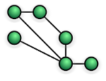
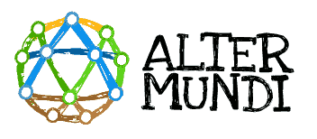
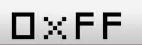

Introduction to LibreMesh
LibreMesh is a modular framework for creating OpenWrt-based firmwares for wireless mesh nodes. Several communities around the world use LibreMesh as the foundation of their local mesh firmwares.
The LibreMesh project includes the development of several tools. The firmware (the main piece) allow simple deployment of auto-configurable, yet versatile, multi-radio mesh networks.
|
Check How it Works to see the basic architecture ideas. Visit Get it to know how to start using it. Read some Documentation to understand better how it works. And join us in the mailing lists to follow the current discussions. |
Mesh Networks
Mesh networks are such networks where all participants (nodes) are able to route traffic from other participants. So there are not central points and the physical topology can be completely random.  Usually mesh networks are decentralized, bottom-up organized, deployed and maintained by the people using them. We believe this is the only way for achieving a real free network out of control of the governments and global enterprises.
Free Networks, Free Society
We understand that a free network as a telecommunications network should accomplish these three points:
-
It is open, so anyone can connect to it if physically possible
-
It is neutral, so there are not preferences for the kind, origin or destination of the data
-
It is free as in freedom (libre means free as in "free speech" in Spanish)
Organizations supporting LibreMesh:
AlterMundi |
Argentina |
 |
|
FreiFunk |
Germany |
|
|
FunkFeuer |
Austria |
 |
|
Guifi |
Iberian peninsula |
|
|
Ibebrasil |
Brasil |
] |
|
LibreRouter |
Global |
||
Ninux.org |
Italy |
||
Wakoma |
Global |
Community mesh networks using Libremesh:
Antennine |
Appennino Bolognese |
||
Calafou |
Catalunia |
||
Coolab |
Brasil |
||
Janastu CowMesh |
Rural Karnataka |
Several other community networks are using or used LibreMesh on their devices with their own customizations (network profiles), some of these are listed here.
Firmware and Embedded Device
An embedded device is a small computer. Usually the operating system running in such small computers is called Firmware. Our way of deploying free mesh networks is by installing our own firmware to the devices (usually WiFi routers). Our system is based on the OpenWrt project, which at the same time is based on the well known Linux operating system. Everything we develop is free software for a free society so anyone can use, copy, modify and distribute according with AGPL license.
History
The LibreMesh project (LiMe) was started in 2013 by a set of free network activists from several cultures and different projects around the world, willing to create a common solution for the deployment of free mesh networks.
In 2017 Shuttleworth Foundation awarded us with a
Flash Grant